Lesespur: Akrobatik: Partnerfiguren und Menschenpyramiden – Lesespurgeschichte mit Rätseln (Klasse 6)

Lesespur: Aufwärmen: warum der Körper Anlauf braucht – Lesespurgeschichte mit Rätseln (Klasse 3)

Lesespur: Ausdauer: der lange Atem – Lesespurgeschichte mit Rätseln (Klasse 8)

Lesespur: Ballspiele: rollen, prellen, werfen, fangen – Lesespurgeschichte mit Rätseln (Klasse 1)

Lesespur: Bewegungsbaustelle: bauen, klettern, rutschen, springen – Lesespurgeschichte mit Rätseln (Klasse 1)

Lesespur: Bewegungslandschaft: ein Hindernisparcours aus Alltagsdingen – Lesespurgeschichte mit Rätseln (Klasse 1)
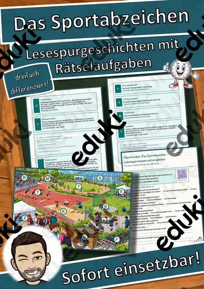
Lesespur: Das Sportabzeichen: Leistungen messen und vergleichen – Lesespurgeschichte mit Rätseln (Klasse 7)

Lesespur: Der Schiedsrichter: Regeln und Entscheidungen – Lesespurgeschichte mit Rätseln (Klasse 6)

Lesespur: Der Sportplatz – Lesespurgeschichte mit Rätseln (Klasse 6)

Lesespur: Der Sportverein: mitmachen, mithelfen, mitbestimmen – Lesespurgeschichte mit Rätseln (Klasse 8)

Lesespur: Die Bundesjugendspiele: laufen, springen, werfen – Lesespurgeschichte mit Rätseln (Klasse 3)

Lesespur: Die Turnhalle: Ein Tag beim Geräteturnen – Lesespurgeschichte mit Rätseln (Klasse 5)

Lesespur: Doping: Betrug am Sport und am eigenen Körper – Lesespurgeschichte mit Rätseln (Klasse 10)

Lesespur: E-Sport: ist das Sport? – Lesespurgeschichte mit Rätseln (Klasse 10)

Lesespur: Eishockey: schnell, hart und fair – Lesespurgeschichte mit Rätseln (Klasse 7)

Lesespur: Erste Hilfe beim Sport: richtig handeln bei Sportverletzungen – Lesespurgeschichte mit Rätseln (Klasse 7)

Lesespur: Fair spielen: gewinnen und verlieren lernen – Lesespurgeschichte mit Rätseln (Klasse 1)

Lesespur: Fang- und Laufspiele: flitzen, ausweichen, abklatschen – Lesespurgeschichte mit Rätseln (Klasse 1)

Lesespur: Fitness und Krafttraining: richtig trainieren – Lesespurgeschichte mit Rätseln (Klasse 9)

Lesespur: Fußball: Regeln, Positionen, Spielidee – Lesespurgeschichte mit Rätseln (Klasse 3)

Lesespur: Gleichgewicht: balancieren, wackeln, sicher stehen – Lesespurgeschichte mit Rätseln (Klasse 1)

Lesespur: Inklusion im Sport: Para-Sport ausprobieren – Lesespurgeschichte mit Rätseln (Klasse 8)

Lesespur: Inline-Skaten: sicher rollen, bremsen, fallen – Lesespurgeschichte mit Rätseln (Klasse 5)

Lesespur: Jonglieren: mit Tüchern, Bällen und Ringen – Lesespurgeschichte mit Rätseln (Klasse 3)

Lesespur: Kleine Spiele auf dem Pausenhof: fangen, hüpfen, mitmachen – Lesespurgeschichte mit Rätseln (Klasse 1)

Lesespur: Klettern sichern: Knoten, Seil und Partnercheck – Lesespurgeschichte mit Rätseln (Klasse 7)

Lesespur: Laufen im Gelände: Crosslauf im Herbst – Lesespurgeschichte mit Rätseln (Klasse 7)

Lesespur: Mannschaftssportarten im Vergleich: Regeln, Felder, Spielerzahl – Lesespurgeschichte mit Rätseln (Klasse 7)
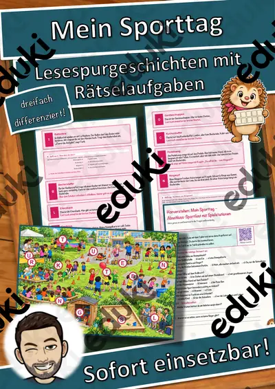
Lesespur: Mein Sporttag: Abschluss-Sportfest mit Spielstationen – Lesespurgeschichte mit Rätseln (Klasse 1)
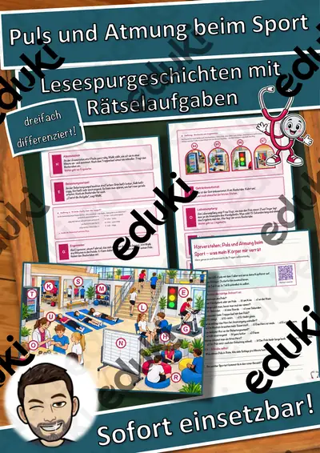
Lesespur: Puls und Atmung beim Sport: was mein Körper mir verrät – Lesespurgeschichte mit Rätseln (Klasse 6)

Lesespur: Rettungsschwimmen: sicher im Wasser helfen – Lesespurgeschichte mit Rätseln (Klasse 9)

Lesespur: Rückschlagspiele: Federball, Tischtennis und Tennis – Lesespurgeschichte mit Rätseln (Klasse 5)

Lesespur: Schlittschuhlaufen: sicher übers Eis gleiten – Lesespurgeschichte mit Rätseln (Klasse 6)
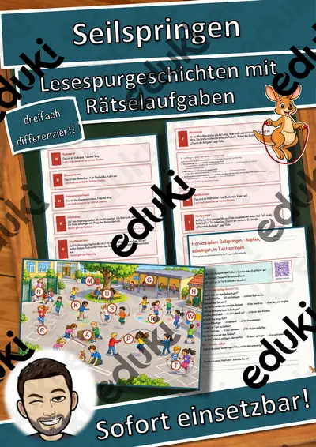
Lesespur: Seilspringen: hüpfen, schwingen, im Takt springen – Lesespurgeschichte mit Rätseln (Klasse 1)

Lesespur: Skilanglauf und Biathlon: gleiten, laufen, zielen – Lesespurgeschichte mit Rätseln (Klasse 8)
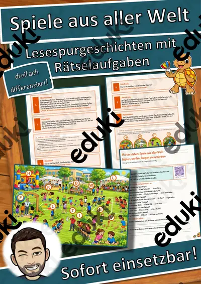
Lesespur: Spiele aus aller Welt: hüpfen, werfen, fangen wie anderswo – Lesespurgeschichte mit Rätseln (Klasse 3)
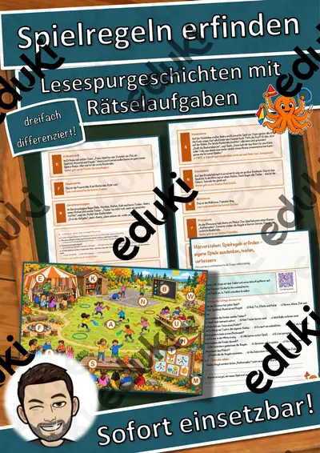
Lesespur: Spielregeln erfinden: eigene Spiele ausdenken, testen, verbessern – Lesespurgeschichte mit Rätseln (Klasse 3)
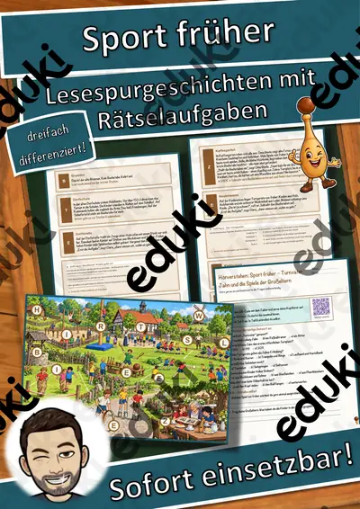
Lesespur: Sport früher: Turnvater Jahn und die Spiele der Großeltern – Lesespurgeschichte mit Rätseln (Klasse 6)

Lesespur: Sport und Ernährung: Energie fürs Training – Lesespurgeschichte mit Rätseln (Klasse 9)

Lesespur: Sport und Medien: Werbung, Stars und Vorbilder – Lesespurgeschichte mit Rätseln (Klasse 10)

Lesespur: Sport und Umwelt: Natursport ohne Spuren – Lesespurgeschichte mit Rätseln (Klasse 9)

Lesespur: Sportgeschichte der Frauen: Hürden, Rekorde und gleiche Chancen – Lesespurgeschichte mit Rätseln (Klasse 10)
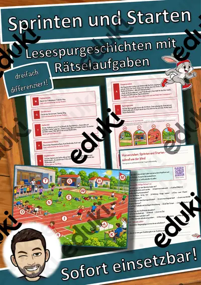
Lesespur: Sprinten und Starten: schnell wie der Wind – Lesespurgeschichte mit Rätseln (Klasse 3)

Lesespur: Stretching und Beweglichkeit: dehnen, aber richtig – Lesespurgeschichte mit Rätseln (Klasse 7)

Lesespur: Tanzen in der Schule: Rhythmus und Bewegung – Lesespurgeschichte mit Rätseln (Klasse 5)

Lesespur: Teamgeist: gemeinsam ans Ziel – Lesespurgeschichte mit Rätseln (Klasse 3)

Lesespur: Trainingsplanung: wie man gezielt besser wird – Lesespurgeschichte mit Rätseln (Klasse 10)
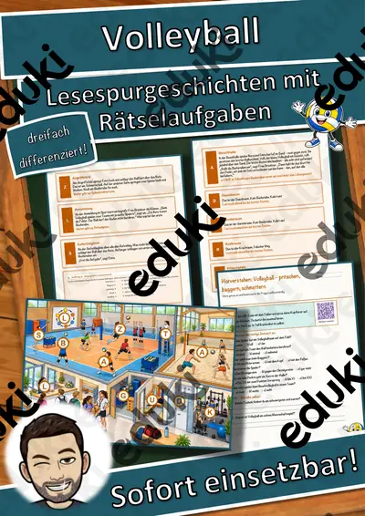
Lesespur: Volleyball: pritschen, baggern, schmettern – Lesespurgeschichte mit Rätseln (Klasse 8)

Lesespur: Wassersport: Rudern, Kanu und Segeln – Lesespurgeschichte mit Rätseln (Klasse 7)
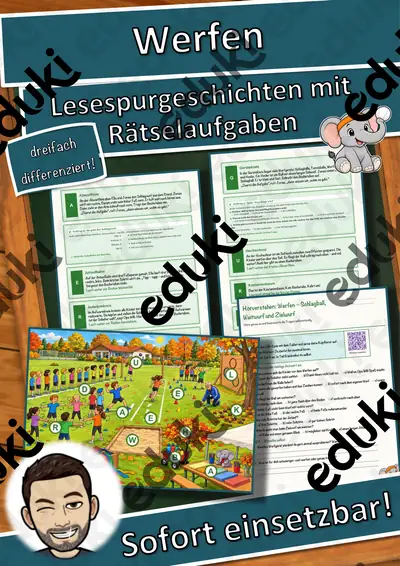
Lesespur: Werfen: Schlagball, Weitwurf und Zielwurf – Lesespurgeschichte mit Rätseln (Klasse 3)

Lesespur: Wettkampf und Nervosität: mit Druck umgehen – Lesespurgeschichte mit Rätseln (Klasse 9)

Materialpaket Lesespurgeschichten Sport Klasse 1: 9 Lesespuren mit Rätselaufgaben, dreifach differenziert

Materialpaket Lesespurgeschichten Sport Klasse 3: 9 Lesespuren mit Rätselaufgaben, dreifach differenziert
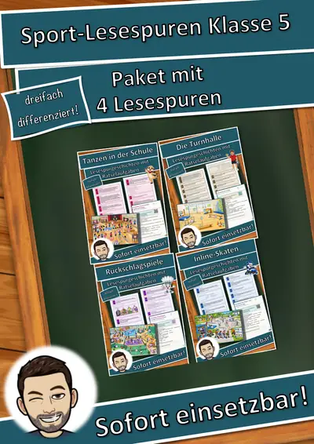
Materialpaket Lesespurgeschichten Sport Klasse 5: 4 Lesespuren mit Rätselaufgaben, dreifach differenziert
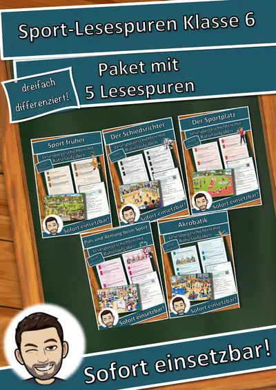
Materialpaket Lesespurgeschichten Sport Klasse 6: 5 Lesespuren mit Rätselaufgaben, dreifach differenziert

Materialpaket Lesespurgeschichten Sport Klasse 7: 7 Lesespuren mit Rätselaufgaben, dreifach differenziert
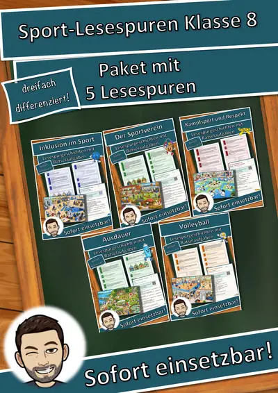
Materialpaket Lesespurgeschichten Sport Klasse 8: 5 Lesespuren mit Rätselaufgaben, dreifach differenziert
Lesespurgeschichten im Fach Sport
Die Stationen führen durch Bewegungsabläufe, Regeln oder eine Sportstätte. Das Material eignet sich für Theoriestunden und für Tage, an denen die Halle ausfällt.
Jede Geschichte liegt in drei Niveaustufen vor, die sich in Textlänge, Satzbau und Aufgabenanspruch unterscheiden. Weg, Stationen und Lösungswort bleiben gleich, sodass alle Fassungen gleichzeitig in einer Klasse laufen können.
Themen auf dieser Seite
Beispiele aus dieser Sammlung: Lesespur: Rettungsschwimmen: sicher im Wasser helfen · Lesespur: Ballspiele: rollen, prellen, werfen, fangen · Materialpaket Lesespurgeschichten Sport Klasse 7: 7 Lesespuren mit Rätselaufgaben, dreifach differenziert · Lesespur: Kleine Spiele auf dem Pausenhof: fangen, hüpfen, mitmachen · Lesespur: Volleyball: pritschen, baggern, schmettern · Lesespur: Trainingsplanung: wie man gezielt besser wird · Lesespur: Sport und Medien: Werbung, Stars und Vorbilder · Lesespur: Klettern sichern: Knoten, Seil und Partnercheck.